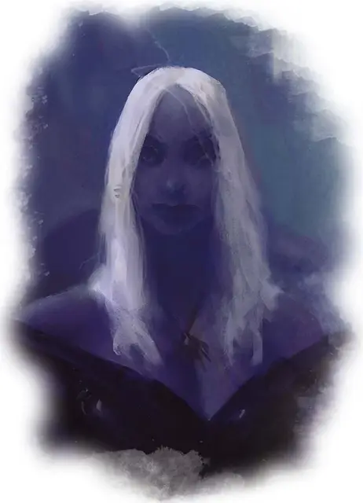

Дроу
Drow
Средний Гуманоид (Эльф), нейтрально-злой

Класс Доспеха 15 (кольчужная рубаха)
Хиты 13 (3к8)
Скорость 30 футов
| мод | спас | ||
|---|---|---|---|
| СИЛ | 10 | +0 | +0 |
| ЛОВ | 14 | +2 | +2 |
| ТЕЛ | 10 | +0 | +0 |
| мод | спас | ||
|---|---|---|---|
| ИНТ | 11 | +0 | +0 |
| МДР | 11 | +0 | +0 |
| ХАР | 12 | +1 | +1 |
Навыки Восприятие +2, Скрытность +4
Чувства тёмное зрение 120 футов, пассивное Восприятие 12
Языки Подземный, Эльфийский
Опасность 1/4 (50 опыта)
Бонус мастерства +2
Среда обитания Подземье
Особенности
Наследие фей. Дроу совершает с преимуществом спасброски от очарования, и магия не может его усыпить.
Врождённое колдовство. Базовой характеристикой дроу является Харизма (Сл спасброска от заклинания 11). Он может накладывать следующие заклинания, не нуждаясь в материальных компонентах:
• Неограниченно: пляшущие огоньки [dancing lights];
• 1/день каждое: огонь фей [faerie fire], тьма [darkness].
Чувствительность к солнечному свету. Находясь на солнечном свету, дроу совершает с помехой броски атаки, а также проверки Мудрости (Восприятие), полагающиеся на зрение.
Вариант: Дроу с магическими доспехами и оружием. Дроу часто носят магические доспехи и магическое оружие, которые при длительном воздействии солнечного света (от 1 часа и дольше) теряют бонусы улучшения.
У дроу, носящего кольчужную рубаху +1 и короткий меч +1, КД 19 и бонус +1 к броскам атаки и урона коротким мечом.
Действия
Короткий меч. Рукопашная атака оружием: +4 к попаданию, досягаемость 5 футов, одна цель. Попадание: 5 (1к6 + 2) колющего урона.
Ручной арбалет. Дальнобойная атака оружием: +4 к попаданию, дистанция 30/120 футов, одна цель. Попадание: 5 (1к6 + 2) колющего урона, и цель должна преуспеть в спасброске Телосложения Сл 13, иначе будет отравленной в течение 1 часа. Если спасбросок провален на 5 и более, цель также становится бессознательной, пока отравлена таким образом. Цель приходит в сознание, если получает урон или другое существо действием разбудит её.
Описание
См. дополнительно статью: "Бестиарий: Дроу"